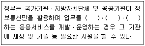
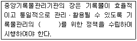
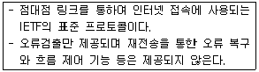
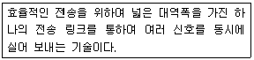
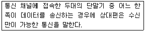

사무자동화산업기사 (2013-09-28 기출문제)
1과목: 사무자동화 시스템
1. 통신판매중개자가 자신의 정보처리시스템을 통하여 처리한 기록 중 소비자의 불만 또는 분쟁처리에 관한 기록의 보존 기준은?
- 6개월
- 1년
- 3년
- 5년
(정답률: 55%)

2. 사무자동화를 보다 활성화하기 위하여 사무처리제도 개선 방안에 적합하지 않은 것은?
- 표준화
- 간소화
- 정형화
- 보안화
(정답률: 75%)
3. 다음 중 사무자동화를 추진하고 수행하는데 있어서 모든 시스템의 주체 및 운영의 주역이 되는 요소로 옳은 것은?
- 철학
- 장비
- 제도
- 사람
(정답률: 78%)
4. 사무자동화 추진과 관련한 시스템 과학의 특징으로 잘못된 것은?
- 고정된 작업공정에 적용
- 반환(feedback) 기능
- 입력과 출력의 분석
- 목적ㆍ목표의 계속적 추구
(정답률: 57%)
5. 사무자동화의 배경에 해당되지 않는 것은?
- 생산부문에 비해 사무부문의 생산성 증가가 크게 저조
- 사무부분 종사자의 증가와 사무근로자의 임금이 큰 폭 상승
- 사무정보기기의 가격하락과 급속한 성능 향상
- 서비스산업의 비중은 증가했으나 정보산업 비중이 감소
(정답률: 75%)
6. 3차원 애니메이션에서 물체의 색상, 질감, 조명 효과를 주어 3차원 물체에 사실감을 주는 작업은?
- Morphing
- Warphing
- Modeling
- Rendering
(정답률: 59%)
7. 컴퓨터의 입출력 제어방식에 해당하지 않는 것은?
- CPU에 의한 방식
- DMA 방식
- 메모리에 의한 방식
- 채널 제어기에 의한 방식
(정답률: 46%)
8. 컴퓨터의 입출력 접속구에 연결되는 장치로 특정 프로그램의 복사나 실행시 인가된 사용자만이 사용할 수 있도록 보안키나 ID를 저장한 장치는?
- watermark
- AirPCap
- i-PIN
- dongle
(정답률: 63%)
9. 클립보드(clipboard)에 대한 설명으로 옳지 않은 것은?
- 컴퓨터에서 임시 저장 공간으로 사용하기 위해 확보된 메모리 영역이다.
- 어떤 프로그램의 데이터를 다른 곳에 복사하는데 사용 되기도 한다.
- 일부 응용프로그램에서는 잘라내기, 복사, 붙여넣기 등을 하기 위해 사용된다.
- 데이터를 잘라낸 뒤 다른 곳에 붙여넣기를 하지 않거나 파일로 저장하지 않는 채 컴퓨터를 종료해도 잘라낸 데이터를 복구할 수 있다.
(정답률: 87%)
10. 주기억장치의 활용도를 극대화하기 위해 프로그램을 비연속적인 곳에 적재하는 작업을 무엇이라 하는가?
- mapping
- page frame
- fragmentation
- dynamic partition
(정답률: 45%)
11. 사무자동화시스템의 주요기능과 거리가 먼 것은?
- 문서화 기능
- 정보활용기능
- 통신기능
- 분업화기능
(정답률: 60%)
12. 전자우편을 엽서가 아닌 밀봉된 봉투에 넣어서 보냈다는 개념으로 IETF(Internet Engineering Task Force)에서 인터넷 초안으로 채택한 것은?
- PEM
- PGP
- S/MIME
- PGP/MIME
(정답률: 49%)
13. 다음 중 전자결재 시스템의 요건으로 옳지 않은 것은?
- 사용자 프라이버시와 익명성을 보장한다.
- 안전한 결제를 위해 소액 결제는 방지한다.
- 안전하고도 다양한 대금 지불 방법을 지원한다.
- 거래 당사자의 신용확인을 위한 기반을 조성한다.
(정답률: 81%)
14. 그룹웨어의 기능 분류에서 비즈니스 규칙 및 작업자들이 처리 과정에서 담당하는 역할에 따라 사용자들 사이에 작업 순서를 매기고 정보의 경로를 지정하는 관리 기능은?
- 프로젝트 관리 기능
- 업무흐름 관리 기능
- 스케줄링 기능
- 의사결정 기능
(정답률: 71%)
15. 1면에 100개의 트랙과 트랙당 8개의 섹터가 있는 양면 기록이 가능한 디스크의 경우 섹터 당 4000 bit씩 수록한다면 이 디스크의 총 용량은 몇 byte인가?
- 400000 byte
- 800000 byte
- 3200000 byte
- 6400000 byte
(정답률: 59%)
16. 사무자동화의 목표에 관한 설명으로 틀린 것은?
- 비전문가라도 사용할 수 있는 시스템을 추구한다.
- 사무실의 기계화를 궁극적인 목표로 한다.
- 창조적 인간능력의 증대를 목표로 한다.
- 생산성 향상을 꾀하는 것이다.
(정답률: 73%)
17. 엑셀 등 스프레드시트에서 범위안에 있는 숫자뿐만 아니라 문자, 기호를 모두 세어 갯수를 표시하는 함수로 가장 적합한 것은?
- countblank 함수
- countif 함수
- count 함수
- counta 함수
(정답률: 73%)
18. 사무자동화 시스템의 평가 방법 중 설문조사 등을 통해 간접적으로 평가하는 방법은?
- 투자효율산정법
- 정성적평가법
- 상대적평가법
- 절대적평가법
(정답률: 66%)
19. 다음 중 전자우편의 일반적인 특성으로 옳지 않는 것은?
- 빠른 정보수신
- 지역적 공간의 해결
- 빠른 의사결정
- 종이 및 우편 요금의 절약
(정답률: 83%)
20. 관계형 데이터베이스에서 속성(attribute)들이 가질 수 있는 값들의 집합은?
- 도메인
- 튜플
- 엔티티
- 릴레이션
(정답률: 62%)
2과목: 사무경영관리 개론
21. 사무관리의 정의에 대한 설명으로 가장 적합하지 않은 것은?
- 사무활동과 기능을 원활히 수행하기 위한 관리행위
- 사무 작업을 과학적 관리 등을 이용하여 효율적으로 수행하는것
- 조직체 운영에 필요한 정보를 효율적, 합리적으로 생산, 유통 및 활용하기 위한 관리
- 경영의 최상위 개념으로 계획, 조작, 통제 및 의사결정의 활동
(정답률: 72%)
22. 자료의 십진분류 방법 중에서 우리나라의 일반자료의 분류에 많이 사용되는 분류법은?
- DOC
- UDC
- NDC
- KDC
(정답률: 83%)
23. 길브레스(Gilbreath)의 "동작의 경제원칙"을 가장 잘 나타내고 있는 것은?
- 발로 할 수 있는 일은 오른손을 사용한다.
- 왼손으로 할 수 있는 작업이라도 오른손을 사용한다.
- 가능한 한 양손이 동시에 작업을 시작하되 끝날 때는 각각 끝나도록 한다.
- 이 원칙은 생산작업뿐만 아니라 사무작업에도 응용할 수 있다.
(정답률: 70%)
24. 다음 중 미래에 예상되는 사무환경 변화로 보기 힘든 것은?
- 미래의 사무실은 출근시간이 일정하지 않을 것임
- 조직형태에 있어서 부서위주의 조직에서 탈피하여 업무 중심의 조직체계로 전환될 것임
- 부서별로 독립된 사무실을 사용할 것임
- 정보와 통신기능 등을 이용하여 원거리의 떨어진 장소에서 사무처리를 할 것임
(정답률: 55%)
25. 문서의 결재에 관한 설명 중 옳지 않은 것은?
- 결재권자의 서명란에는 서명날짜를 함께 표시한다.
- 위임전결하는 경우에는 전결하는 사람의 서명란에 "전결" 표시를 한 후 서명하여야 한다.
- 대결(代決)하는 경우에는 대결하는 사람의 서명란에 "대결" 표시를 하고 서명하여야 한다.
- 위임전결사항을 대결하는 경우에는 전결하는 사람의 서명란에 "대결" 표시를 하고 서명하여야 한다.
(정답률: 81%)
26. 컴퓨터 단말기 조작업무에 대한 조치로 옳지 않은 것은?
- 실내는 명암의 차이가 심하지 않도록 한다.
- 직사광선이 들어오지 않는 구조로 한다.
- 창, 벽면 등은 반사되지 않는 재질을 사용한다.
- 고휘도형 조명기구를 사용한다.
(정답률: 81%)
27. 행정기관 등에 송신한 전자문서는 언제 송신자가 발송한 것으로 보는가?
- 그 전자문서의 발신시점이 정보시스템에 의하여 전자적으로 결재된 때
- 그 전자문서의 송신시점이 정보시스템에 의하여 전자적으로 결재된 때
- 그 전자문서의 발신시점이 정보시스템에 의하여 전자적으로 기록된 때
- 그 전자문서의 송신시점이 정보시스템에 의하여 전자적으로 기록된 때
(정답률: 65%)
28. 사무표준화의 대상만으로 묶여진 것은?
- 정책, 재료, 인간, 금전, 의사결정
- 정책, 기계와 비품, 방법, 금전
- 정책, 재료, 기계와 비품, 의사결정
- 정책, 기계와 부품, 금전, 환경적응
(정답률: 35%)
29. EDI의 특징으로 틀린 것은?
- 거래 쌍방의 자주성과 독립성이 보장된다.
- 독립된 데이터베이스를 가진다.
- 구조화되지 않은 데이터로 전송할 수 있다.
- 서류없는 거래(paper less trade)가 가능하다.
(정답률: 66%)
30. 사무작업의 정확도를 향상시키기 위한 표준으로 작업 단위의 수가 보통 %로 표시되는 사무표준의 종류는?
- 양 표준
- 질 표준
- 양 및 질 표준
- 정책 표준
(정답률: 60%)
31. 보고를 필요로 하는 경우가 아닌 것은?
- 효율적인 정책 수립을 위하여
- 사업결과를 평가하기 위하여
- 부서간 기관간 수평적인 의사전달을 위하여
- 업무를 독력하고 협조를 위하여
(정답률: 50%)
32. 서식 결재에 관한 일반 원칙으로 틀린 것은?
- 서식에는 용지의 규격과 지질을 표시하여야 한다.
- 민원서식에는 민원인의 편의를 도모하기 위하여 그 민원업무의 처리 흐름도 등을 표시하여야 한다.
- 법령에서 서식에 날인하여야 한다고 정하고 있지 아니하면 서명이나 날인을 할 수 없다.
- 서식에는 불필요하거나 활용도가 낮은 항목을 넣어서는 아니 된다.
(정답률: 46%)
33. 조직을 효율적으로 운영하기 위한 사무조직의 요건에 알맞지 않은 것은?
- 목적과 양을 가진 업무(작업)가 있어야 한다.
- 업무와 업무와의 관계가 분명하여야 한다.
- 직원과 업무와의 관계가 명확하여야 한다.
- 직원의 희망이나 만족은 조직에 의하여 베타적이어야 한다.
(정답률: 86%)
34. 산업안전보건기준에 관한 규칙에 의거 공기정화설비 등에 의하여 사무실로 들어오는 공기의 기류속도 기준은?
- 매 초당 0.1 미터 이하
- 매 초당 0.5 미터 이하
- 매 초당 0.7 미터 이하
- 매 초당 1.0 미터 이하
(정답률: 43%)
35. 데이터베이스제작자의 권리 발생과 존속 기준으로 옳은 것은?
- 데이터베이스의 제작을 공표한 때부터 발생하며, 그 다음 해부터 기산하여 5년간 존속
- 데이터베이스의 제작을 공표한 때부터 발생하며, 그 해부터 기산하여 5년간 존속
- 데이터베이스의 제작을 완료한 때부터 발생하며, 그 다음 해부터 기산하여 5년간 존속
- 데이터베이스의 제작을 완료한 때부터 발생하며, 그 해부터 기산하여 5년간 존속
(정답률: 29%)
36. 다음 ( ) 안에 가장 알맞은 내용으로 열겨된 것은?

- 규격화, 다양화, 고도화
- 규격화, 자동화, 고도화
- 효율화, 자동화, 고도화
- 효율화, 자동화, 표준화
(정답률: 30%)
37. 라인 조직의 지휘ㆍ명령의 통일성을 유지하면서 전문화의 원리를 살리기 위하여 스텝 제도를 절출시킨 형태로 에머슨식 조직이라고도 하는 것은?
- 사업부제 조직
- 매트릭스 조직
- 직계참모 조직
- 직능별 조직
(정답률: 53%)
38. 사무작업의 측정법과 관계없는 것은?
- 스톱워치법
- 워크 샘플링법
- 표준시간 자료법
- 추상적 측정법
(정답률: 78%)
39. 공공기록물 관리에 관한 법률상 다음 ( )안에 알맞은 것은?

- 표준화
- 분업화
- 간소화
- 전문화
(정답률: 78%)
40. 다음 중 사무 표준화의 목적과 가장 관계 없는 것은?
- 사무 환경의 개선
- 직원들의 사기가 높아지며 능력별 활용에 유리
- 감독, 통제의 통일
- 공동 이해 촉진과 직원의 생산성 향상
(정답률: 22%)
3과목: 프로그래밍 일반
41. 번역 프로그램에 의해 번역된 여러 개의 목적 프로그램과 프로그램에서 사용되는 내장 함수를 하나로 모아서 실행 가능하도록 프로그램을 생성하는 기능을 하는 것은?
- 워킹 셋
- 링커
- 디버거
- 인터프리터
(정답률: 40%)
42. C 언어에느 사용되는 이스케이프 스퀀스(Escape Sequence)와 그 의미의 연결이 옳지 않는 것은?
- \n : new line
- \b : null character
- \t : tab
- \r : carriage return
(정답률: 74%)
43. 단항 연산으로만 나열된 것은?
- OR, COMPLEMENT, MOVE
- COMPLEMENT, MOVE, AND
- NOT, COMPLEMENT, XOR
- NOT, COMPLEMENT, MOVE
(정답률: 78%)
44. 수명 시간 동안 고정된 하나의 값과 이름을 가지며, 프로그램이 동작하는 동안 절대로 값이 바뀌지 않는 것을 의미하는 것은?
- 변수
- 포인터
- 블록
- 상수
(정답률: 83%)
45. 예약어에 대한 설명으로 옳지 않은 것은?
- 프로그램 판독성을 감소시킨다.
- 프로그래머가 변수 이름으로 사용할 수 없다.
- 프로그램의 신뢰성을 향상시킨다.
- 번역 과정에서 속도를 높여준다.
(정답률: 70%)
46. 로더의 기능이 아닌 것은?
- allocation
- compile
- linking
- relocation
(정답률: 72%)
47. BNF 표기법에서 정의를 나타내는 기호는?
- >>=
- <<=
- #=
- ::=
(정답률: 89%)
48. 기억장치 배치 전략 중 프로그램이나 데이터가 들어갈 수 있는 크기의 빈 영역 중에서 단편화를 가장 많이 남기는 분할 영역에 배치시키는 기법은?
- FIRST FIT
- WORST FIT
- BEST FIT
- LARGE FIT
(정답률: 57%)
49. 프로그램 수행 순서로 옳은 것은?
- 원시프로그램 → 컴파일러 → 목적프로그램 → 로더 → 링커
- 원시프로그램 → 로더 → 목적프로그램 → 링커 → 컴파일러
- 원시프로그램 → 컴파일러 → 목적프로그램 → 링커 → 로더
- 원시프로그램 → 목적프로그램 → 컴파일러 → 링커 → 로더
(정답률: 57%)
50. A - ( D * K ) 인 중위식을 후위식으로 옳게 표현한 것은
- - D A * K
- A D K * -
- A - D * K
- A * D - K
(정답률: 60%)
51. 원시 프로그램을 컴파일러가 수행되고 있는 컴퓨터의 기계어로 변역하는 것이 아니라, 다른 기종에 맞는 기계어로 변역하는 것은?
- Interpreter
- Linker
- Cross Compiler
- Preprocessor
(정답률: 73%)
52. 묵시적 제어에 관한 설명으로 가장 적절한 것은?
- 수치 자료에 대한 제어를 의미한다.
- 미리 지정된 순서를 프로그래머가 직접 변경한다.
- 문자 자료에 대한 제어를 의미한다.
- 프로그래머가 직접 제어하지 않는 경우 미리 정해진 순서대로 제어한다.
(정답률: 74%)
53. 스케줄링 기법 중 시분할 시스템을 위하여 고안된 방식으로 FCFS 알고리즘을 선점 형태로 변형한 기법은?
- SRT
- MFQ
- Round Robin
- HRN
(정답률: 39%)
54. 운영체제의 성능 평가 기준으로 거리가 먼 것은?
- Cost
- Throughtput
- Turn around time
- Reliability
(정답률: 65%)
55. 원시 프로그램을 하나의 긴 스트링으로 보고 원시 프로그램을 문자 단위로 스캐닝 하여 문법적으로 의미있는 일련의 문자들로 분할해 내는 역할을 하는 것은?
- 구문분석기
- 어휘분석기
- 디버거
- 선행처리기
(정답률: 59%)
56. 서브루틴 호출 처리 작업시 복귀주소를 저장하고 조회하는 용도로 적합한 자료 구조는?
- 데크
- 큐
- 스택
- 연결리스트
(정답률: 63%)
57. 언어의 구문 요소 중 프로그램의 판독성을 향상시키며, 프로그램 문서화의 중요한 부분을 담당하는 것은?
- 식별자
- 주석
- 상수
- 예약어
(정답률: 50%)
58. C 언어에서 사용하는 기억 클래스의 종류가 아닌 것은?
- Automatic variable
- Register Variable
- Message Variable
- Static Variable
(정답률: 76%)
59. 기계어에 대한 설명으로 옳지 않은 것은?
- 수행 시간이 신속하다.
- Mnemonic 언어라고도 한다.
- 언어의 호환성이 없다.
- 컴퓨터가 직접 이해할 수 있는 언어이다.
(정답률: 51%)
60. 준비상태 큐에 대기하고 있는 작업 중에서 수행시간이 가장 짧은 작업을 먼저 수행하도록 하는 스케줄링 기법은?
- SQF
- SJF
- RR
- HRN
(정답률: 60%)
4과목: 정보통신 개론
61. 오류가 검출되면 자동적으로 송신 스테이션에게 재전송을 요청하는 ARQ 기법의 형태가 아닌 것은?
- Stop-and-Wait ARQ
- Go-back-N ARQ
- Responsive-send ARQ
- Selective-Repeat ARQ
(정답률: 61%)
62. 다음이 설명하고 있는 데이터 링크 제어 프로그램은?

- LAPB
- PPP
- LLC
- HDLC
(정답률: 57%)
63. 패킷교환에서 가상회선방식과 비교하여 데이터 그램 방식의 장점으로 틀린 것은?
- 짧은 메시지를 전송할 경우 훨씬 빠르다.
- 모든 패킷이 항상 보내어진 순서대로 도착하고, 패킷의 에러 복구가 가능하다.
- 망의 혼잡 상황에 따라 적절한 경로로 패킷을 전달할 수 있는 융통성이 크다.
- 우회 경로로 패킷을 전달할 수 있으므로 신뢰성이 높다.
(정답률: 55%)
64. 다음이 설명하고 있는 것은?

- 집중화
- 다중화
- 복호화
- 공유화
(정답률: 73%)
65. 데이터 통신에서 오류 검출 기법으로 틀린 것은?
- 패리티 검사
- 허프만 검사
- 블록 합 검사
- 순환 중복 검사
(정답률: 63%)
66. 회선교환방식에 비해 메시지 교환 방식의 장점으로 틀린 것은?
- 송신측과 수신측이 동시에 운영 상태에 있을 필요가 없다.
- 1개의 메시지를 여러 단말 장치로 복사하여 보낼 수 있다.
- 한 노드에 전송대기 상태에 있는 메시지가 많다면 우선순위가 높은 메시지를 먼저 전송할 수 있다.
- 회선의 효율성이 매우 낮다.
(정답률: 63%)
67. 다음중 HDLC 프레임의 구조가 순서대로 옳은 것은?
- 플래그 - 주소부 - 제어부 - 정보부 - FCS - 플래그
- 플래그 - 제어부 - FCS - 정보부 - 주소부 - 플래그
- 플래그 - 주소부 - 정보부 - FCS - 제어부 - 플래그
- 플래그 - 제어부 - FCS - 주소부 - 정보부 - 플래그
(정답률: 50%)
68. 디지털 전송로에 디지털 신호를 전송하기 위한 신호 변환장치는?
- REPEAT
- DTE
- FEP
- DSU
(정답률: 53%)
69. LAN에서 중앙의 교환기가 고장이 나면 시스템이 일시에 통신 불능이 되는 토폴리지(topology)는?
- 링(Ring)
- 버스(Bus)
- 스타(Star)
- 트리(Tree)
(정답률: 63%)
70. TCP 프로토콜에 대한 설명으로 틀린 것은?
- 전송 계층 서비스를 제공한다.
- 전이중 서비스를 제공한다.
- 비 연결형 프로토콜이다.
- 에러 제어 프로토콜이다.
(정답률: 42%)
71. 정보통신 시스템의 신호 변환장치가 아닌 것은?
- TEC
- Modem
- CODEC
- DSU
(정답률: 54%)
72. OSI-7계층 중에서 암호화, 데이터 압축, 코드변환 등의 기능을 수행하는 계층은?
- 트랜스포트계층(Transport Layer)
- 응용계층(Application Layer)
- 세션계층(Session Layer)
- 프리젠테이션계층(Presentation Layer)
(정답률: 48%)
73. 시분할(time-sharing) 시스템의 설명으로 거리가 먼 것은?
- 실시간(real-time) 응답이 주로 요구된다.
- 컴퓨터와 이용자가 서로 대화형으로 정보를 교환한다.
- 컴퓨터 파일 자원의 공동이용이 불가능하다.
- 다수의 단말기가 1대의 컴퓨터를 공동으로 사용한다.
(정답률: 51%)
74. 다음이 설명하고 있는 통신 방식은?

- 단방향 통신
- 반이중 통신
- 전이중 통신
- 송수신 통신
(정답률: 69%)
75. 다음 중 주파수분할 다중화(FDM)에 대한 설명으로 옳은 것은?
- 비동기식 다중화 방식에 속한다.
- 대역확산방식을 이용한 다중화 방식이다.
- 각 채널에 고정된 time slot을 할당하는 방식이다.
- TV방송이나 CATV 등에 사용되며, 전송로의 대역폭을 여러 개의 작은 대역으로 나누어 쓰는 기법이다.
(정답률: 49%)
76. HDLC 링크구성 방식에 따른 세 가지 동작모드에 해당하지 않는 것은?
- 정규응답모드(NRM)
- 동기응답모드(SRM)
- 비동기응답모드(ARM)
- 비동기균형모드(ABM)
(정답률: 51%)
77. 데이터그램(datagram) 패킷 교환방식에 대한 설명으로 틀린 것은?
- 수신은 송신된 순서대로 패킷이 도착한다.
- 속도 및 코드 변환이 가능하다.
- 각 패킷은 오버헤드 비트가 필요하다.
- 대역폭 설정에 융통성이 있다.
(정답률: 35%)
78. 다음 중 DTE-DCE 인터페이스에 속하지 않는 것은?
- 전기적 특성
- 기계적 특성
- 기능적 특성
- 통신적 특성
(정답률: 58%)
79. 불균형적인 멀티포인트 링크 구성에 회선제어 방식 중 주 스테이션이 각 부 스테이션에게 데이터 전송을 요청하는 것은?
- 폴링
- 셀렉션
- 슬라이딩 윈도우
- 멀티드롭
(정답률: 62%)
80. 전송제어 문자 중에서 수신된 내용에 아무런 에러가 없다는 의미를 가진 것은?
- ENQ
- ACK
- NAK
- DLE
(정답률: 52%)